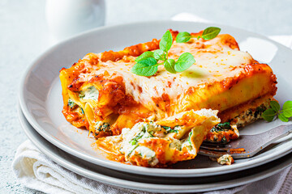

Lasagna

Description
Lasagna is a traditional Italian dish made by layering flat pasta sheets with meat sauce, cheese (like ricotta and mozzarella), and tomato sauce, then baking it until bubbly and golden. It's a hearty, comforting meal that's often served in generous slices and enjoyed worldwide.
Ingredients
- 1 lb ground beef (or a mix of beef & pork)
- 1 small onion, diced
- 2–3 cloves garlic, minced
- 1 (24 oz) jar marinara sauce or crushed tomatoes
- 1 tbsp tomato paste (optional for richness)
- 1 tsp dried basil
- 1/2 tsp dried oregano
- Salt and pepper
- 15 oz ricotta cheese (or cottage cheese)
- 1 egg
- 1 tsp dried parsley or Italian seasoning
Steps
- In a large skillet over medium heat, sauté onion in a bit of olive oil until soft (2–3 mins).
- Add garlic and cook for 1 more minute.
- Add ground beef and cook until browned. Drain excess fat.
- Stir in marinara sauce, tomato paste, basil, oregano, salt, and pepper. Simmer 15–20 minutes.
- In a bowl, mix ricotta, egg, Parmesan, parsley, salt, and pepper until combined.
- Boil lasagna noodles according to package directions. Drain and lay flat on a baking sheet or clean towel.
- Preheat oven to 375°F (190°C).
- In a 9×13" baking dish, spread a thin layer of meat sauce.
- Layer noodles, ricotta mixture, mozzarella, and meat sauce. Repeat for 2–3 layers.
- Finish with noodles, remaining sauce, and a generous layer of mozzarella on top.
- Cover with foil and bake for 25 minutes.
- Remove foil and bake another 15–20 minutes, until bubbly and golden.
- Let rest 10–15 minutes before slicing.